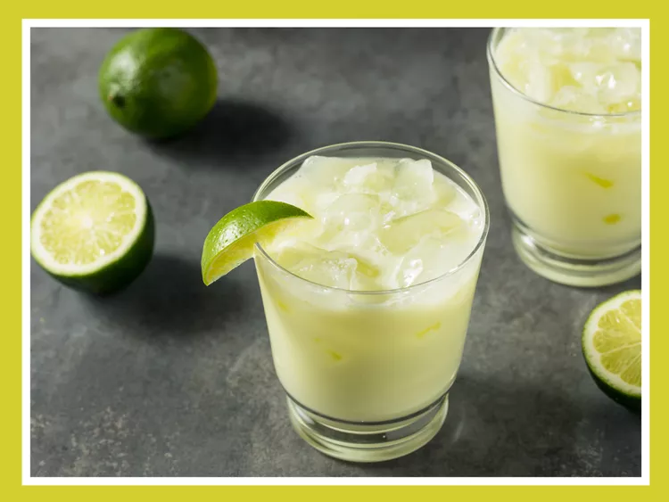

Limonada

Descripción
La limonada es una bebida refrescante y clásica que combina el sabor cítrico de los limones con la dulzura del azúcar, creando una experiencia de sabor única y revitalizante. Desde su color amarillo brillante hasta su aroma fresco y estimulante, la limonada es el acompañamiento perfecto para cualquier ocasión, ya sea una tarde de verano en el patio trasero o una reunión informal con amigos.
Ingredientes
Instrucciones
- Exprime los limones para obtener su jugo fresco y cuela para eliminar las semillas y los grumos.
- En una jarra grande, mezcla el jugo de limón con agua fría en una proporción de 1 parte de jugo de limón por 3 partes de agua.
- Agrega azúcar al gusto y revuelve hasta que se disuelva por completo. Puedes empezar con 1 taza de azúcar por cada litro de limonada y ajustar según tu preferencia de dulzura.
- Si lo deseas, añade cubitos de hielo a la jarra para enfriar la limonada antes de servirla.
- Sirve la limonada en vasos altos con rodajas de limón como decoración, y disfruta de esta bebida refrescante y deliciosa en cualquier momento del día.